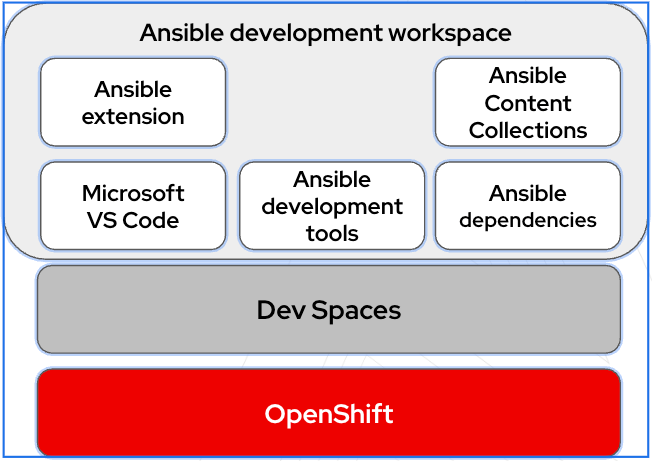
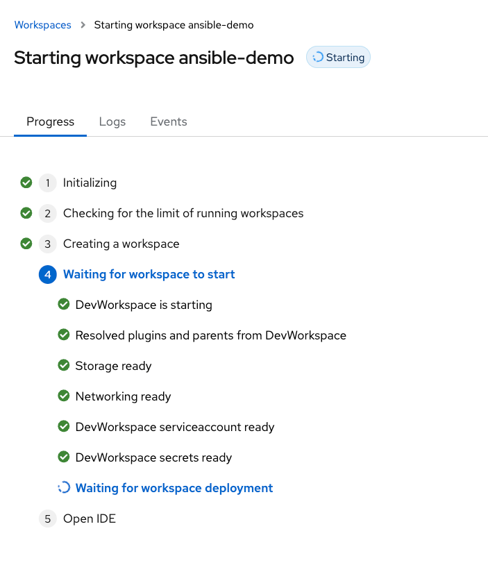
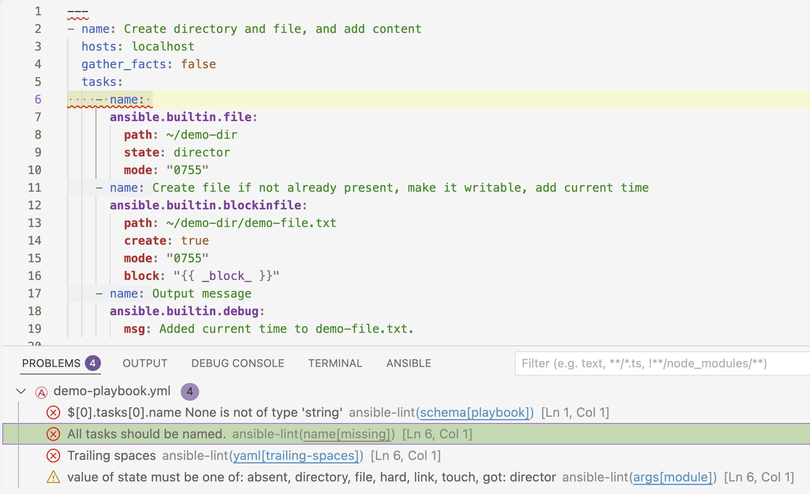

Thank you for your interest in Red Hat Ansible Automation Platform. Ansible Automation Platform is a commercial offering that helps teams manage complex multi-tier deployments by adding control, knowledge, and delegation to Ansible-powered environments.
This guide describes how to set up and use Ansible development workspaces to develop Ansible automation content in a browser-based environment. This document has been updated to include information for the latest release of Ansible Automation Platform.
Providing feedback on Red Hat documentation
If you have a suggestion to improve this documentation, or find an error, you can contact technical support at https://access.redhat.com to open a request.
|
Important
|
Ansible development workspaces is a Technology Preview feature only. Technology Preview features are not supported with Red Hat production service level agreements (SLAs) and might not be functionally complete. Red Hat does not recommend using them in production. These features provide early access to upcoming product features, enabling customers to test functionality and provide feedback during the development process. For more information about the support scope of Red Hat Technology Preview features, see Technology Preview Features Support Scope. |
1. Ansible development workspaces
Ansible development workspaces provide a fully supported browser-based development environment that includes Ansible development tools for creating and testing Ansible playbooks, roles, and collections. The workspaces run as containers within Red Hat OpenShift Dev Spaces.
1.1. Introduction to Ansible development workspaces
Ansible development workspaces offer centralized management and policy enforcement. Administrators gain improved control, trust, and governance over the consistent, secure environments used to develop automation. Developers do not need to install applications on their workstations, which is useful for locked down environments.
Ansible development tools and runtimes are pre-configured in Ansible development workspaces. Developers can start creating projects for automation content quickly by logging in to Ansible development workspaces in a browser.
The development tools in Ansible development workspaces are based on Ansible recommended practices, which improves the quality and reliability of your automation content. As a component of your Red Hat Ansible Automation Platform subscription, Ansible development workspaces are fully supported.
To ensure that your automation content files persist when you quit Ansible development workspaces, you push your projects to a git repository in a source control manager (SCM) that is linked to your workspace.
1.2. Ansible development workspaces components
Each Ansible development workspace is a project-agnostic full development environment. Dependencies are satisfied for all the tools in the environment.
The following applications are pre-installed.
-
Microsoft VS Code
-
Python
-
ansible-core -
Ansible development tools (ADT) package, which includes:
-
ansible-creatorfor scaffolding directory structure for your automation content -
ansible-lintfor identifying stylistic errors and anti-patterns -
moleculefor running functional tests on your automation content
-
1.3. About the Ansible dev spaces image
Red Hat OpenShift Dev Spaces is a containerized cloud development environment (CDE) that provides pre-configured, consistent workspaces running on OpenShift Container Platform. It provisions ready-to-code workspaces on demand.
The Ansible dev spaces image is the container image for Ansible development workspaces. It replaces an existing Ansible demo within OpenShift Dev Spaces and is fully supported by Red Hat.
For details for the Ansible devspaces image, see the Ansible Automation Platform devspaces image page in the All containers section of the Red Hat Ecosystem catalog.
The following diagram illustrates the relationship between OpenShift Container Platform, OpenShift Dev Spaces, and Ansible development workspaces.

2. Setting up Ansible dev spaces
An administrator must install Red Hat OpenShift Dev Spaces to create a OpenShift Dev Spaces dashboard from where developers can launch Ansible development workspaces.
2.1. Prerequisites
To install Red Hat OpenShift Dev Spaces, you must meet the following requirements:
-
You have access to a web-browser and network connectivity.
-
You have installed Red Hat OpenShift Container Platform.
-
You have an active Red Hat OpenShift cluster.
-
You have a valid subscription to Red Hat Ansible Automation Platform.
-
You have set up a version control system such as Git.
2.2. Installing Red Hat OpenShift Dev Spaces
An administrator must install Red Hat OpenShift Dev Spaces to generate an OpenShift Dev Spaces dashboard. The dashboard is the entry point for developers to launch Ansible development workspaces.
-
Follow the steps in Installing Dev Spaces on OpenShift using the web console in the Red Hat OpenShift Dev Spaces Administration guide to install OpenShift Dev Spaces.
This process includes the following steps:
-
Log in to your OpenShift cluster as an administrator.
-
Install the OpenShift Dev Spaces operator from the OperatorHub.
-
Create an instance of the OpenShift Dev Spaces operator.
-
-
Share the URL for the OpenShift Dev Spaces dashboard with the users who need to launch Ansible development workspaces.
3. Creating and launching an Ansible development workspace
An administrator installs Red Hat OpenShift Dev Spaces. After installation, developers can use the provided OpenShift Dev Spaces dashboard to create Ansible development workspaces that include a web-based version of VS Code.
3.1. Authentication
Ansible dev spaces must be able to authenticate with your Git source control manager (SCM).
-
If your organization has integrated Git source control OAuth authentication with Ansible dev spaces, you do not need to configure authentication between OpenShift Dev Spaces and your Git SCM.
-
If your organization has not set up OAuth authentication, you must generate personal access tokens for authentication between OpenShift Dev Spaces and your Git SCM.
3.1.1. Configuring Git personal access token authentication
You must create a personal access token (PAT) in your Git source control manager (SCM), and add it to OpenShift Dev Spaces to enable access to your repositories from your Ansible development workspace.
-
Create a personal access token in your Git SCM and save it.
-
See Managing your personal access tokens in the GitHub documentation.
-
See Personal access tokens in the Gitlab documentation.
-
-
In a browser, navigate to the OpenShift Dev Spaces dashboard provided by your administrator, and log in.
-
Expand the dropdown menu under your login name and select User Preferences.
-
Select Personal Access Tokens.
-
Click +Add Token.
-
Complete the Add Personal Access Token form:
-
Token Name: Enter a name for your token
-
Token: Enter your personal access token for your Git repository.
-
-
Click Add to save the personal access token.
3.2. Creating a Git repository for an Ansible development workspace
To launch an Ansible development workspace, you must provide a link to a Git repository that defines the development environment. The repository also stores the automation content you create in Ansible dev spaces.
-
If your administrator provides an example repository for your team, fork the repository to create your own copy.
-
If you do not have access to an example repository, you must create your own repository.
-
Create a directory for your new repository and use
git initto initialize it as a Git repository. -
Add a
devfile.yamlfile to the repository to define the Ansible dev spaces image that you want to use for your Ansible development workspace. See Creating a devfile for Ansible development workspaces. -
Add a
.code-workspacefile to the repository to specify the {VS Code} extensions for your Ansible development workspace. See Creating a.code-workspacefile for Ansible development workspaces.
-
3.3. Creating a devfile for an Ansible development workspace
To ensure your Ansible development workspace launches with the correct Ansible dev spaces image,
you must add a devfile to your git repository.
A devfile is a YAML file that defines the development environment for a project in Red Hat OpenShift Dev Spaces.
-
In your Git repository for your Ansible development workspace, create a new file named
devfile.yaml. -
Copy and paste the following sample code into the
devfile.yamlfile:--- # cspell: disable=devspaces schemaVersion: 2.2.2 metadata: name: ansible-devspaces-devfile components: - name: tooling-container container: image: registry.redhat.io/ansible-automation-platform-tech-preview/ansible-devspaces-rhel9:latest memoryRequest: 256M memoryLimit: 6Gi cpuRequest: 250m cpuLimit: 2000m args: ["tail", "-f", "/dev/null"] env: - name: "ANSIBLE_COLLECTIONS_PATH" value: "~/.ansible/collections:/usr/share/ansible/collections" - name: KUBEDOCK_ENABLED value: "true" ... -
Modify the image value to the name of your specific Ansible image.
-
Add the
devfile.yamlfile to your Git repository and push the changes to your source control manager (SCM).
3.4. Creating a .code-workspace file for an Ansible development workspace
To configure VS Code extensions that are included in your Ansible development workspace,
you must add a .code-workspace JSON file to your git repository.
-
In your Git repository for your Ansible development workspace, create a new file named
.code-workspace. -
Copy and paste the following sample code into the
.code-workspacefile:{ "settings": { "ansible.lightspeed.suggestions.enabled": true, "ansible.lightspeed.enabled": true }, "extensions": { "recommendations": [ "redhat.ansible", "redhat.vscode-yaml", "redhat.vscode-openshift-connector", "eamodio.gitlens", ] }, } -
If you want to add extra extensions to your Ansible development workspace, add them in the
extensions.recommendationssection of the file. -
Add the
.code-workspacefile to your Git repository and push the changes to your source control manager (SCM).
3.5. Launching an Ansible dev spaces workspace
-
Your administrator has provided a URL for a OpenShift Dev Spaces dashboard.
-
You have prepared a git repository that contains the
devfile.yamland.code-workspacefiles that define the Ansible development workspace configuration.
-
In a browser, navigate to the OpenShift Dev Spaces dashboard and log in.
-
Select Create Workspace in the navigation pane.
-
In the Import from Git field of the Create Workspace form, enter the URL for the Git repository that contains your
devfile.yamland.code-workspacefiles. -
Click Create & Open.
-
OpenShift Dev Spaces displays the progress for the provisioning process of your Ansible development workspace.

After the Ansible development workspace launches, a VS Code environment opens in your browser.
-
To open a terminal for executing commands and viewing
ansible-lintsuggestions in VS Code, click the main menu icon in the Activity bar and select .For more information about working in a VS Code terminal, see Getting started with the terminal in the VS Code documentation.
4. Developing automation content in your workspace
The Ansible development tools are installed as part of the Ansible extension in the Ansible development workspace. You can use Ansible development tools to scaffold directories for automation content in your repository.
Using the Ansible extension ensures that best practices for directory structure are met. For more information about using the Ansible extension to develop automation content, refer to Developing automation content.
Red Hat recommends that you create only one collection per repository, so that each collection has a clear, specific purpose. This approach promotes reusability, as each collection is a self-contained unit of content. A one-to-one relationship between a collection and its repository also improves manageability by simplifying dependency management, maintenance, and release cycles.
4.1. Creating collections and playbooks in your Ansible development workspace
Use the Ansible extension in VS Code to use Ansible development tools to scaffold directories and files for your automation content.
You can use Red Hat Ansible Lightspeed with IBM watsonx Code Assistant to help you write playbooks, and ansible-lint to debug them.
-
In the OpenShift Dev Spaces dashboard. select the Ansible development workspace where you want to develop automation content.
-
In the Activity bar of VS Code, select the Ansible icon to open Ansible development tools.
-
Select Connect in the Ansible Lightspeed section to log in to Ansible Lightspeed.
-
Select an option in the initialize section of Ansible Development tools to scaffold files and directories for a collection project or a playbook project.
-
For more information on creating a playbook project, see the Scaffolding a playbook project chapter of the Developing automation content guide.
-
For more information on creating a roles collection project, see the Scaffolding a collection project for your roles section of the Developing automation content guide.
-
-
Select options in the Add section of Ansible development tools to add files for playbooks or roles to your project. Alternatively, you can use the options in the Ansible Lightspeed section to generate playbooks or roles.
-
Save your work:
-
Click the main menu icon in the Activity bar and select .
-
Use
git addandgit commitcommands to stage the changed files and commit your changes to the local repository in the workspace. -
Use the
git pushcommand to push your updates to your repository in your source control manager.
-
4.2. Editing and debugging automation content in your Ansible development workspace
You can continue your work in a previously created workspace. Workspaces that have been inactive for a set period might be paused to free up resources. The duration of inactivity before timeout is configured in OpenShift Dev Spaces by your administrator. A paused workspace automatically relaunches when you select it from the OpenShift Dev Spaces dashboard.
Ansible lint indicates errors in your playbooks.
-
To display your previously created workspaces, select Workspaces in your OpenShift Dev Spaces dashboard.
-
Select Open next to the workspace that you want to use.
-
Select the Explorer icon in the Activity bar to open the file explorer, and open the file you want to edit.
-
While you are editing, the Ansible extension provides suggestions. Select a suggestion from the dropdown list to include it in your playbook.
-
To view documentation for a keyword or a module, hover your mouse over it.
-
Open the terminal in VS Code: click the main menu icon in the Activity bar and select .
-
Select the Problems tab in the terminal to view issues that
ansible-linthas identified.In the following example, one error is selected in the Problems tab, and the corresponding line in the playbook is highlighted.

-
When you have resolved the problems in your playbook, a message is displayed in the Problems tab of the terminal.
4.3. Executing playbooks in your Ansible development workspace
You can execute a playbook using the Ansible extension in VS Code.
-
To execute a playbook in your Ansible development workspace, right-click on a playbook name in the file explorer and select .
|
Note
|
You cannot use execution environments in Ansible development workspaces.
Do not use |
4.4. Sharing your work
To share automation content with your colleagues, you can work from the same repository.
-
To contribute to a colleague’s project, request the URL for the Git repository that corresponds to your colleague’s Ansible development workspace.
-
Launch a workspace using the repository URL that your colleague shared.
-
Work within a new git branch and contribute to your colleague’s repository by creating a merge or pull request.
5. Ansible development workspaces management and teardown
You can delete Ansible development workspaces from OpenShift Dev Spaces. For more information on managing OpenShift Dev Spaces, see the Red Hat OpenShift Dev Spaces Authentication guide.
5.1. Deleting an Ansible development workspace
To delete the contents of an Ansible development workspace, you delete the workspace itself. This action removes all the pods, storage, and other resources associated with that specific workspace, effectively wiping its contents.
-
You know the name of the workspace you want to delete.
-
Stop the Ansible development workspace that you want to delete.
-
To stop the workspace in the Dev Spaces dashboard, select the workspace that you want to delete and select .
-
To stop the workspace using OpenShift
occommands, follow the steps in Stopping workspaces in the Red Hat OpenShift Dev Spaces User Guide.
-
-
Delete the workspace:
-
To delete the workspace from the Dev Spaces dashboard, select the workspace that you want to delete and select .
-
To delete a workspace using OpenShift
occommands, follow the steps in Removing workspaces in the Red Hat OpenShift Dev Spaces User Guide.
-
5.2. Uninstalling OpenShift Dev Spaces
-
To uninstall OpenShift Dev Spaces, follow the steps in the Uninstalling Dev Spaces chapter of the Red Hat OpenShift Dev Spaces Administration Guide.
|
Note
|
Uninstalling Ansible dev spaces removes all Ansible dev spaces-related user data. |